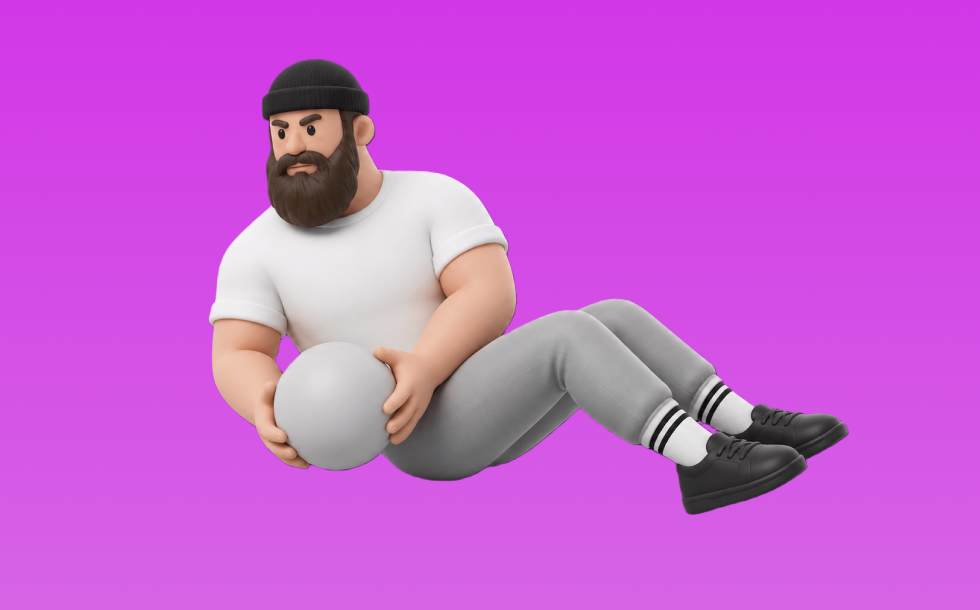

ロシアンツイスト

ロシアンツイストとは、自重を使って「体幹をひねる」動作で腹斜筋を中心に体幹を鍛える種目です。器具なしで手軽にでき、姿勢や足の位置で負荷調整しやすいのが特徴で、座って上体を少し倒し、体幹を安定させたまま左右へひねる動作を繰り返します。お腹の引き締めや体幹の安定性向上が期待できます。
- 対象部位
- 体幹
- 器具
- 自重
- 記録形式
- 回数
- 別名
- ツイスト
YouTube動画
-
【毎日2分】腹筋をヒネって引き締める！ロシアンツイストのやり方
-
ひねり腹筋2分！ウエストを絞る「レッグアップツイスト」のやり方
-
１分間のロシアンツイストでお腹を割る＆絞れる腹筋トレ！
-
腹筋！インナーマッスルに効く筋トレ「ロシアンツイスト」【リングフィット攻略】
-
【筋トレ】スポーツ選手にもお勧め！腹斜筋も鍛えられる山本義徳流ロシアンツイスト
-
【くびれたウエストを作る】ロシアンツイストのやり方 #家で一緒にやってみよう【ビーレジェンド プロテイン】
-
【ボディメイク】間違いやすい腹斜筋の種目「ロシアンツイスト」腕・肩痛めないためには？
-
腹筋群をまとめて鍛える最強種目 ロシアンツイスト
-
【毎日2分】ウエスト痩せに効果的な「ツイストランジ」の正しいやり方
-
【コツがある‼️】ロシアンツイスト・腹斜筋 : ボディビル 元 日本チャンピオン 久野礼子 ( Ayako Kuno ) : 美と健康のために 筋肉 をつけて、 脂肪 を落とす！
-
1日5分 自宅筋トレプログラム「ロシアンツイスト」お腹まわりを引き締める！｜1日1トレーニングで4週間で確実に1kg痩せよう｜みんなでフィットネス
-
ロシアンツイストのやり方｜くびれが欲しい女性におすすめ
-
脇腹のぜい肉を絞る筋トレ「ダンベルロシアンツイスト」！正しいやり方を解説
-
【1分で分かる】ロシアンツイストのやり方【腹筋トレーニング】
-
【１分体幹トレーニング】ロシアンツイスト
-
【初心者向け】ウエストのくびれを作る「ロシアンツイスト」のやり方を解説！
-
【下腹部＆くびれ】10種目10分間で下腹を引き締めて、くびれのあるウエストを作りましょう。目指せ最速シックスパック。初心者の方用のやり方あり。
-
お腹周りの引き締めと腰痛予防に効果的なロシアンツイスト
-
ロシアンツイストのやり方ってある？効果的に行う方法はこれ！
-
【横腹も腰も】ウェストを絞って薄いお腹を作るなら腹筋と背中を同時に鍛えるこのトレーニング！
-
【初心者向け】引き締まったくびれをつくる！【ロシアンツイスト】
-
【横腹の筋トレ】全力ひねり腹筋3分！脇腹の脂肪を落としたい人向け
-
【ロシアンツイスト】腹斜筋に効かせて短期間でぽっこりお腹を解消するコツを解説
YouTubeショート
-
ロシアンツイストの正しいフォーム#shorts
-
この腹筋トレめっちゃ痩せた（ロシアンツイスト）
-
腹斜筋に効かせるロシアンツイストのやり方 #GronG #グロング #筋トレ #ロシアンツイスト #腹斜筋 #腹筋トレ #体幹トレーニング #ボディメイク
-
ねぇ知ってる？意外と難しいロシアンツイスト‼︎ちゃんとしたフォームで腹筋に効かせよ！#shorts #ビフォーアフター #パーソナルジム #パーソナルトレーニング #WILLパーソナルジム
-
【筋トレ解説】腹筋をひねって引き締める！ロシアンツイスト解説
-
腹筋トレの注意点！ロシアンツイスト編！ #shorts
-
ロシアンツイストは足どうしています？#shorts
-
ロシアンツイストをやった方が良い人 vs やらない方が良い人
-
【中級者向け】腹筋＆インナーマッスルを鍛える筋トレ「ロシアンツイスト」の正しいポイント動画
-
【腹斜筋】脇腹のぜい肉を絞る！ダンベルロシアンツイスト解説
-
【腹筋のトレーニング】ロシアンツイスト お〜るあうと！トレーニングフォーム解説動画
-
HOW TO PROPERLY DO RUSSIAN TWISTS ✅
-
【ダンベル・ツイストクランチの正しいやり方】内・外の複斜筋を、効果的に攻め上げろ！｜Training Movie 100｜Tarzan Web
-
お腹周りの肉に効くツイストの正しいやり方.
-
家でも出来る正しいトレーニング方法！ロシアンツイスト編 心斎橋navis
-
【筋肉つかない】自重トレ3種目 #自重トレーニング #筋トレ #フィットネス
-
15秒で腹筋割る。忙しい人向け！
-
腹筋を最大限に鍛える種目３選【筋トレ】
-
【1番簡単で1番効く腹斜筋トレーニング！】ロシアンツイストのやり方！#shorts
-
【ガチで効く】”腹斜筋”を鍛える宅トレメニュー４選🔥 #shorts #腹筋 #シックスパック
-
マウンテンクライマーの大事ポイント#shorts
-
こんな腹筋はやめましょう #フィットネス #筋トレ
-
体を捻ってお腹を引き締める腹筋運動ツイスト！ #腹筋 #お腹痩せ #筋トレ
-
プランクの正しいやり方
-
腹筋はシンプルですが#shorts
-
クランチを習得しないで他の腹筋は絶対やるな！ チャンネル登録をお願いします! #筋トレ #トレーニング #腹筋
動作方法
- 体幹を固定して姿勢を整える
- 反動を使わず、腹部の収縮を感じる
- 呼吸を止めずに動作する
動作ポイント
- 腰を反らしすぎない
- 首に力を入れすぎない
ワンポイントアドバイス
- 回数よりも体幹の安定を優先する
- 腰に違和感がある場合は可動域を調整する
目的別回数設定
目的や体力に応じた一般的な目安です。無理のない範囲で調整してください。
- 筋力アップ
- 1〜5回
- 筋肥大
- 6〜12回
- 持久力アップ
- 13〜20回
YouTube動画について
動画はYouTubeの公開情報をもとに表示しています。内容は投稿者によるもので、Biggrによる監修ではありません。
アプリを入手
筋トレやトレーニングの記録はBiggrにお任せください。今すぐ無料で使い始められます。